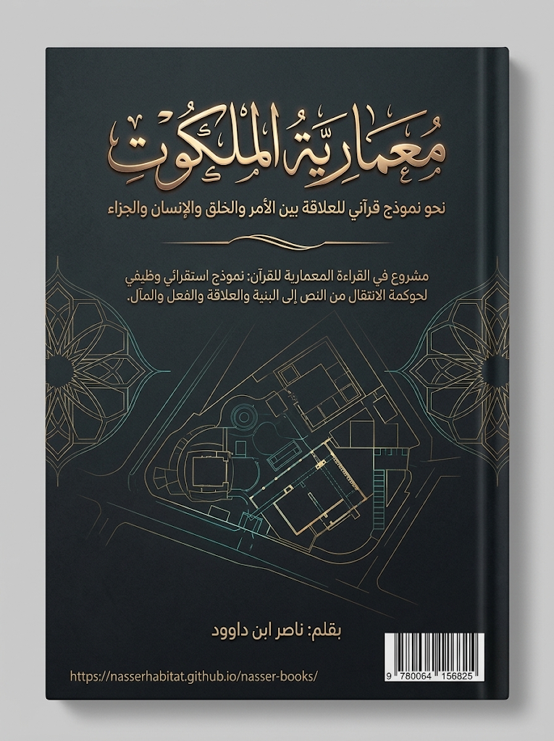

ناصر ابن داوود

نسخة نصية مستخرجة من ملف Word الذي قدمه المؤلف؛ راجع المصدر الأصلي.
جارٍ تجهيز القارئ…
معمارية الملكوت
نحو نموذج قرآني للعلاقة بين الأمر والخلق والإنسان والجزاء
بقلم: ناصر ابن داوود
إطار منهجي قرآني للقراءة المعمارية
المعمارية في هذا الكتاب ليست مجرد استعارة تفسيرية، وليست نظرية أنطولوجية في حقيقة الملكوت؛ وإنما هي إطار منهجي اجتهادي لتنظيم العلاقات التي يكشف عنها الاستقراء القرآني، واختبار مدى قدرتها على إنتاج نماذج تفسيرية قابلة للمراجعة.
تُشكل هذه المبادئ المنهجية حجر الزواية لرؤية كتاب «معمارية الملكوت»، حيث تحدد بدقة حقيقة "الموديل" أو النموذج المستنبط ومرتبته الابستمولوجية.
يمكن تلخيص المرتكزات المنطقية لهذه الديباجة في أربعة محاور أساسية:
المعمارية بوصفها إطاراً منهجياً لا حقيقة أنطولوجية: النمذجة المعمارية هنا لا تدعي كشف كنه "عالم الغيب" أو الذات الإلهية، بل هي أداة لترتيب وتنظيم العلاقات الوظيفية التي أظهرها الاستقراء الدقيق للنص القرآني.
النموذج وقابليته للمراجعة والتطوير: لا يتصف النموذج بالجمود؛ بل يظل افتراضاً تفسيرياً يخضع لاختبارات الاطراد والتكرار والشواهد المستقلة من داخل النص.
شروط الارتقاء المنهجي: ينتقل النموذج من مجرد محاولة تفسيرية إلى "إطار تفسيري أوسع" عبر استيفاء معايير دقيقة:
التكرار والاطراد: ثبات العلاقات عبر مختلف سياقات القرآن.
الشاهد المستقل والمقاوم: صمود النموذج أمام الاستثناءات والنصوص الظاهرية المعارضة.
الاقتصاد في الافتراضات: عدم فرض مقولات خارجية تزيد النموذج تعقيداً دون حاجة نصية.
التحفظ ضد الادعاء المطلق: استخدام مصطلح "نظرية" أو "نموذج" يظل اصطلاحاً إجرائياً داخلياً، ولا يعني بحال من الأحوال امتلاك الحقيقة المطلقة للنص أو تجاوز حدود الشهادة إلى الغيب.
الفهرس العام
معمارية الملكوت 3
الفهرس العام 4
1 الباب الأول: ميثاق القراءة المعمارية 7
1.1 المقدمة 7
1.2 الفصل التمهيدي : ميثاق القراءة المعمارية: من النص إلى النموذج 12
2 الباب الثاني: من فقه اللسان إلى القراءة المعمارية 21
2.1 الفصل الأول: من فقه اللسان إلى القراءة المعمارية 21
3 الباب الثالث: معمارية الأمر والخلق 40
3.1 الفصل الثاني: عالم الأمر وعالم الخلق: نحو نموذج للتكامل الوظيفي 40
3.2 الفصل الثالث: "كُنْ": الأمر التكويني وحدود التمثيل البرمجي 48
4 الباب الرابع: معمارية الكتاب والحفظ والبيان 62
4.1 الفصل الرابع: الكتاب والحفظ والبيان: من الثبات إلى الإظهار 62
5 الباب الخامس: معمارية الفعل والتنفيذ الغيبي 77
5.1 الفصل الخامس: الملائكة — الوظيفة التنفيذية وحدود التمثيل التشغيلي 77
6 الباب السادس: الوحي والرسالة والإنسان 82
6.1 الفصل السادس: الرسل والوحي: من التبليغ إلى تنزيل الهداية في الواقع 82
7 الباب السابع: معمارية الإنسان 87
7.1 الفصل السابع: الإنسان: نقطة التقاء الأمر والخلق — معمارية التكليف والاستجابة 87
7.2 الفصل الثامن: القلب والوعي: من الاستقبال إلى التشغيل 96
8 الباب الثامن: معمارية التكليف والفعل 105
8.1 الفصل التاسع: الأمر والنهي: هندسة التوجيه الإنساني 105
8.2 الفصل العاشر: الفعل والأثر: من الحدث إلى المسؤولية 112
9 الباب التاسع: الزمن والحياة والموت 112
9.1 الفصل الحادي عشر: الحياة والموت: من الحالة إلى التحول 112
9.2 الفصل الثاني عشر: الدنيا والآخرة: من الثنائية الزمنية إلى الامتداد السنني 117